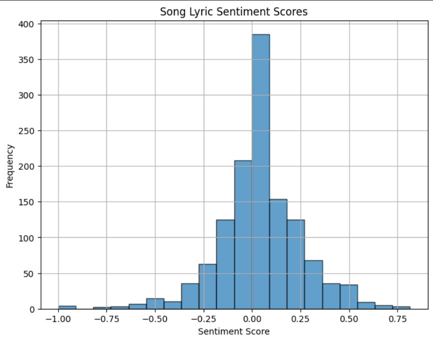
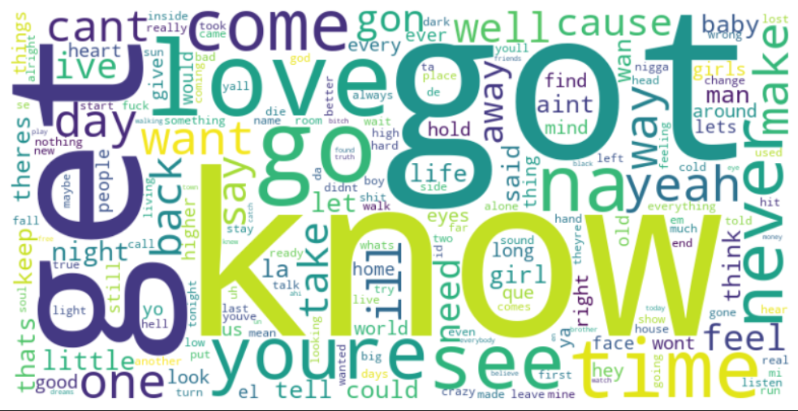

The text processing in this project includes wordclouds and analysis the genres for each of the ten Coachella stages/tents. This is done with the Python package “Wordcloud”, to visualize the genres for each tent to identify any trends.
In addition, text analysis on the lyrics was implemented. This was implemented by analyzing the sentiment scores from the lyrics. This lyrics analysis only regards the artists from the main stage, and this restriction was made due to time limitation.
It is important to note that all songs in the dataset come from performers that performed on the Main Stage of Coachella, so we cannot draw any conclusions on the festival as a whole, just the Main Stage. This is simply a limitation of the amount of textual data we could collect without a subscription to any lyric API.

This histogram shows the distribution of sentiment scores for all 1292 songs collected. A positive score means a positive sentiment and a negative score means a negative sentiment. We can see that there is a slight majority of songs that have a positive sentiment and the plot roughly follows a normal distribution. We expected songs to have more extreme sentiments, that is, there would be more songs that have large positive values or large negative values. Instead, it seems that most songs have relatively neutral sentiments, with few having strong positive or negative sentiments.
Additionally, we looked at the distribution of positive, negative, and neutral scores for each year. In real terms, we looked at the sentiments of songs made by artists that performed on the Main Stage that year. Out of the 22 years observed, 17 had a majority of positive sentiments. This implies that the artists that perform on the Main Stage tend to produce positive sentiments with their discographies.
While the overwhelming majority of years had an overall positive sentiment, it is not enough to conclude that any individual Coahella festival was particularly positive. Since the song/lyric data is not based off the set list of that individual performance, an artist at Coachella could’ve performed entirely negative songs while scoring mostly positive in this analysis. What these graphs do show is that performers that have been invited to play the Main Stage tend to have discographies with positive sentiments.
In addition to sentiment analysis, we wanted to generate word clouds to identify trends in lyrics in Main Stage performances. Below is a cloud containing the lyrics for all songs regardless of the year.

We generated a total of 23 word clouds which can all be found in the explainer notebook. A few trend were observed in these wordclouds created. Firstly, there are clearly groups of associated words that appear frequently, such as the “love song” group. This includes words such as: love, baby, babe, sexy, heart, etc. and could also include helper words such as: get, got, or tonight. There is also the appearance of other languages, mainly Spanish. It is very easy to tell which years included hispanic performers due to the appearance of que, el, la and other Spanish stopwords that were not removed by the English filter.
Overall, there does not seem to be significant differences between the yearly word clouds. It is difficult to spot trends in these word clouds as often the most interesting words appear only once while words that are common among traditional pop themes (ex: love songs) dominate the word clouds. This is not to say that the years are all the same but there are not many standout years.